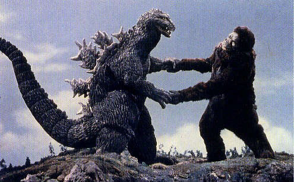

Kaijū (怪獣, kaijū?) é uma palavra japonesa que significa “besta estranha”, “animal incomum”, mas que costuma ser traduzida como “monstro”. Especificamente, é usada para se referir a um gênero de tokusatsu, que são filmes de efeitos especiais, normalmente de heróis ou monstros. Termos relacionados incluem “kaiju eiga (怪獣映画 ? filme de monstro)”, um filme com kaiju, “kaijin” (referindo-se a monstros vagamente humanóides) e daikaijū (大怪獣? monstro grande), especificamente se referindo a uma variação maior de monstro.
Temos como exemplo os seguintes filmes com Kaiju:
O mais famoso Kaiju é o Godzilla.
últimos posts:
MEu gatinho é um flerkin muito mal humorado.